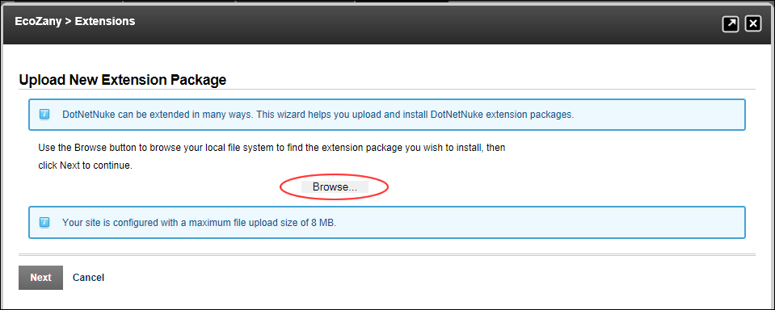

Using the Install Extension Wizard
How to install an extension using the Install Extension Wizard. This tutorial assumes are currently viewing the Upload New Extension page of the Install Extension Wizard. This wizard can be accessed via the action menu of certain modules such as the Dashboard and Extensions module.
- On the Upload New Extension Package page:
- Click the Browse... button.

- Select the required file from your computer.
- Click the Next button.
- Optional. The Upload Results page will be displayed if there is an unusual result such as a legacy Skin or Container, or the language package has already been uploaded. In this case, select the required action and click the Next button - OR - Click the Cancel button and start again.
- On the Package Information page, review the package information and then click the Next button.
- On the Release Notes page, review the release notes and then click the Next button.
- On the Review License page:
- At License, review the license for this extension.
- At Accept License?to agree to the license terms.
- Click the Next button.
- On the Package Installation Report page, review the package installation results.
- Click the Return button to return to the module. Note: The newly added extension is now listed on the Installed Extensions tab of the Extensions module.